本文最后更新于 2024-10-11T09:36:46+00:00
AI换脸入门
DeepFaceLive
https://github.com/iperov/DeepFaceLive
支持换脸和视频驱动图片，但是只提供了预训练的模型
用 docker 部署
1
2
3
4
5
6
7
| sudo docker pull akash19nayak/deepfacelive
cd build/linux
sudo docker run --ipc host --gpus all -e DISPLAY=$DISPLAY -v /tmp/.X11-unix:/tmp/.X11-unix -v ./data:/data/ --rm -it akash19nayak/deepfacelive
sudo docker run --ipc host --gpus all -e DISPLAY=$DISPLAY -v /tmp/.X11-unix:/tmp/.X11-unix -v ./data:/data/ -v /home/node1/Desktop/code/ai/data/swap-face/syz:/syz_data --device=/dev/video0:/dev/video0 --device=/dev/video1:/dev/video1 --rm -it akash19nayak/deepfacelive
|
该仓库支持换脸和视频驱动图片，但是部署后只找到换脸功能，可用的脸有限
对于每张脸都需要训练个模型，训练模型使用iperov/DeepFaceLab （这个仓库目前被封了），自训练的模型可以实现自定义的脸、更高的清晰度
DeepFaceLab镜像仓库idonov/DeepFaceLab
GitHub - davidnasar/DeepFaceLab-1: DeepFaceLab最新版，完整版，原版汉化版。
Docker构建DeepFaceLab GitHub - xychelsea/deepfacelab-docker: Docker Containers for DeepFaceLab with TensorFlow in Anaconda 3
换脸实现
打开图形化界面之后，可以手动选择脸模型和保存图片的文件夹
要想获得换脸后的视频，需要从原视频提取出mp3音频，然后以25帧每秒的帧率将图片合成为mp4视频，使用ffmpeg
换脸过程需要手动操作，暂无自动化的方案，只作了2个demo
mp4视频提取mp3音频
1
| ffmpeg -i .\121.mp4 121.mp3
|
以25帧每秒的帧率将图片合成为mp4视频，使用之前生成的mp3音频
1
| ffmpeg -framerate 25 -i Ava_121/%06d.jpg -i 121.mp3 -c:v libx264 -c:a aac -strict experimental -b:a 192k -shortest -pix_fmt yuv420p Ava_121.mp4
|
效果

比DeepLiveCam清晰，但是存在额头颜色不衔接的问题（左下图）
调研
网络上的其他实现
https://www.youtube.com/watch?v=YV1PeHRETEo
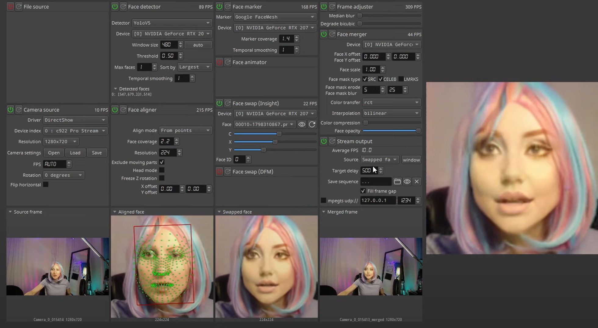
DeepFaceLab
对于每张脸都需要训练个模型，训练模型使用iperov/DeepFaceLab （这个仓库目前被封了），自训练的模型可以实现自定义的脸、更高的清晰度
DeepFaceLab镜像仓库idonov/DeepFaceLab
原版DeepFaceLab只支持windows
linux版 GitHub - dream80/DeepFaceLab_Linux: Linux环境，自用！阿里云P4测试通过！
汉化版GitHub - davidnasar/DeepFaceLab-1: DeepFaceLab最新版，完整版，原版汉化版。
Docker构建DeepFaceLab GitHub - xychelsea/deepfacelab-docker: Docker Containers for DeepFaceLab with TensorFlow in Anaconda 3
docker镜像仓库https://hub.docker.com/r/xychelsea/deepfacelab
DeepFaceLab论文DeepFaceLab: Integrated, flexible and extensible face-swapping framework
【高精度AI换脸全网最详细deepfacelab教程】高精度AI换脸全网最详细deepfacelab教程_哔哩哔哩_bilibili
教程文档（详细）DeepFaceLab 2.0 Guide - DeepfakeVFX.com
常用模型下载地址 https://blog.csdn.net/j_starry/article/details/129042235
docker安装
1
2
3
4
5
6
7
8
9
|
sudo docker run --gpus all --rm -it --user root --name deepfacelab \
-v ./workspace:/usr/local/deepfacelab/workspace \
--net=host --ipc=host \
-e DISPLAY=$DISPLAY \
-v /tmp/.X11-unix:/tmp/.X11-unix \
xychelsea/deepfacelab:latest-gpu /bin/bash
sudo docker run --gpus all --rm -it --user root --name deepfacelab -v ./workspace:/usr/local/deepfacelab/workspace --net=host --ipc=host -e DISPLAY=$DISPLAY -v /tmp/.X11-unix:/tmp/.X11-unix cjl/deepfacelab1 /bin/bash
|
下面的操作在latest-gpu版本的容器内
1
2
3
4
5
6
| apt update
apt install nano
su anaconda
cd /usr/local/deepfacelab/scripts
nano env.sh
|
使用方法
参考 高精度AI换脸全网最详细deepfacelab教程_哔哩哔哩_bilibili
- 运行脚本2，3，将两个视频分割为图片
- 源视频切脸
可选 f(face)/wf(whole face)/head
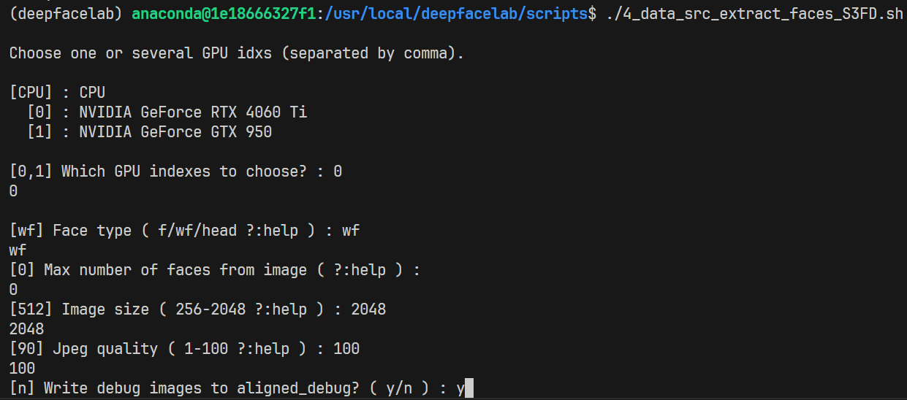
1
| ./4_data_src_extract_faces_S3FD.sh
|
如果切脸的时候进度条保持在0，等待一段时间后遇到报错 NVIDIA Geforce RTX 4060 Ti doesnt response, terminating it. 可能是虚拟内存不足了，重启设备或扩大虚拟内存(swap 分区)即可。参考文献https://dfldata.cc/forum.php?mod=viewthread&tid=13632
- 源视频排序
默认选5即可，速度很快
- 目标视频切脸
1
| 5_data_dst_extract_faces_S3FD.sh
|
- 目标视频排序
- 训练
先在宿主机运行 xhost +
超参调节可参考https://www.vfxcool.com/36267.html
需要连接到图形化界面，可在容器内检查 DISPLAY 环境变量是否已经设置，是否和图形界面的 DISPLAY 一致
调参有点复杂，下面是训练时的效果
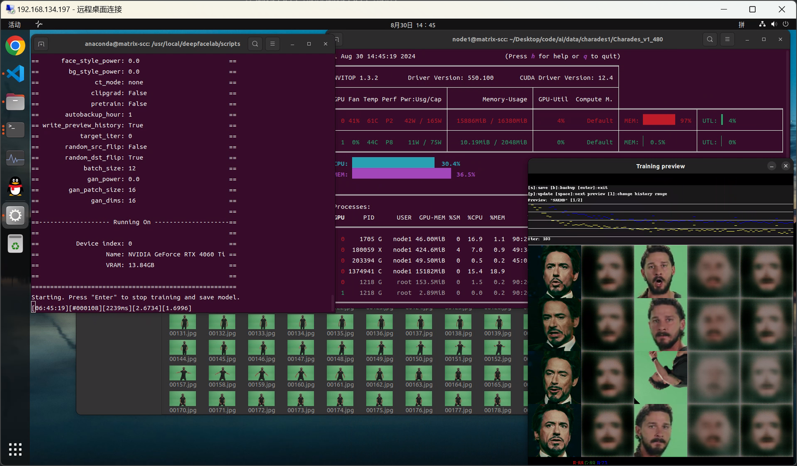
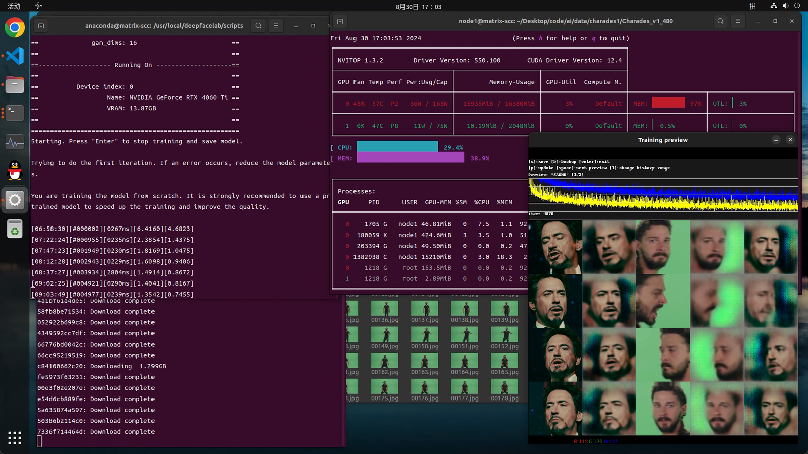
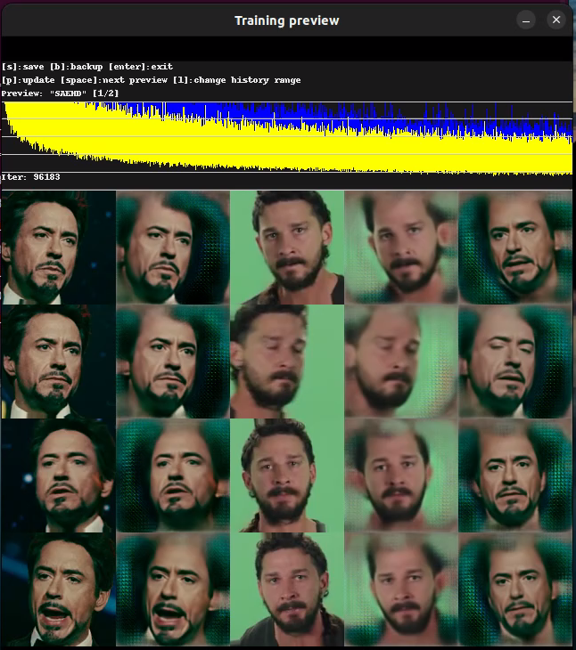
可供参考的调参方式
1
2
3
4
5
6
7
8
9
10
11
12
13
14
15
16
17
18
19
20
21
22
23
24
25
26
27
28
29
30
31
| ==------------------ Model Options ------------------==
== ==
== resolution: 256 ==
== face_type: head ==
== models_opt_on_gpu: True ==
== archi: liae-ud ==
== ae_dims: 384 ==
== e_dims: 96 ==
== d_dims: 96 ==
== d_mask_dims: 32 ==
== masked_training: True ==
== eyes_mouth_prio: True ==
== uniform_yaw: False ==
== adabelief: True ==
== lr_dropout: n ==
== random_warp: True ==
== true_face_power: 0.0 ==
== face_style_power: 0.0 ==
== bg_style_power: 0.0 ==
== ct_mode: none ==
== clipgrad: True ==
== pretrain: False ==
== autobackup_hour: 6 ==
== write_preview_history: False ==
== target_iter: 0 ==
== random_src_flip: False ==
== random_dst_flip: False ==
== batch_size: 8 ==
== gan_power: 0.1 ==
== gan_patch_size: 32 ==
== gan_dims: 24 ==
|
- 导出dfm模型
（参考https://github.com/Qyuzet/DeepFaceLab-Scripts-NVIDIA-RTX2080Ti-11-20-2021）
6_export_SAEHD_as_dfm.sh
1
2
3
4
5
6
| #!/usr/bin/env bash
source env.sh
$DFL_PYTHON "$DFL_SRC/main.py" exportdfm \
--model-dir "$DFL_WORKSPACE/model" \
--model SAEHD
|
安装所需包 pip install tf2onnx
得到模型workspace/model/model_name_SAEHD_model.dfm
Xseg遮罩
不使用遮罩的话，在头发、眼镜、手等遮挡面部时会产生奇怪的效果，如下图
遮罩使用教程及遮罩模型下载
https://zhuanlan.zhihu.com/p/647961546
【镇坛之宝】deepfacelab万能Xseg遮罩模型最新版本下载_deepfakelab镇坛之宝-CSDN博客
https://dfldata.cc/forum.php?mod=viewthread&tid=1637
DeepFaceLab 2.0 XSeg Tutorial - DeepfakeVFX.com
https://www.youtube.com/watch?v=CHs3VuW7TtU&t=167s
参考https://github.com/Qyuzet/DeepFaceLab-Scripts-NVIDIA-RTX2080Ti-11-20-2021，补全Xseg必须的脚本文件
scripts/5.XSeg-data_dst_mask-edit.sh
1
2
3
4
5
| #!/usr/bin/env bash
source env.sh
$DFL_PYTHON "$DFL_SRC/main.py" xseg editor \
--input-dir "$DFL_WORKSPACE/data_dst/aligned"
|
scripts/5.XSeg-data_src_mask-edit.sh
1
2
3
4
5
| #!/usr/bin/env bash
source env.sh
$DFL_PYTHON "$DFL_SRC/main.py" xseg editor \
--input-dir "$DFL_WORKSPACE/data_src/aligned"
|
启动遮罩，如果遇到qt的问题，参考这篇文章 https://blog.csdn.net/LOVEmy134611/article/details/107212845 手动安装所有动态链接库即可解决
手动标注数据集😖
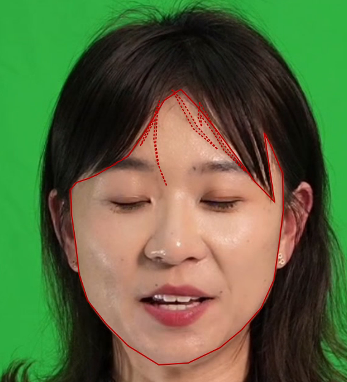
整理手工标注好的遮罩
5.XSeg-data_dst_mask-fetch.sh
1
2
3
4
5
| #!/usr/bin/env bash
source env.sh
$DFL_PYTHON "$DFL_SRC/main.py" xseg fetch \
--input-dir "$DFL_WORKSPACE/data_dst/aligned"
|
5.XSeg-data_src_mask-fetch.sh
1
2
3
4
5
| #!/usr/bin/env bash
source env.sh
$DFL_PYTHON "$DFL_SRC/main.py" xseg fetch \
--input-dir "$DFL_WORKSPACE/data_src/aligned"
|
5.XSeg-train.sh 训练遮罩
1
2
3
4
5
6
7
8
| #!/usr/bin/env bash
source env.sh
$DFL_PYTHON "$DFL_SRC/main.py" train \
--training-data-src-dir "$DFL_WORKSPACE/data_src/aligned" \
--training-data-dst-dir "$DFL_WORKSPACE/data_dst/aligned" \
--model-dir "$DFL_WORKSPACE/model" \
--model XSeg
|
基于训练好的模型应用遮罩
5.XSeg-data_src_trained_mask-apply.sh
1
2
3
4
5
6
| #!/usr/bin/env bash
source env.sh
$DFL_PYTHON "$DFL_SRC/main.py" xseg apply \
--input-dir "$DFL_WORKSPACE/data_src/aligned" \
--model-dir "$DFL_WORKSPACE/model"
|
5.XSeg-data_dst_trained_mask-apply.sh
1
2
3
4
5
6
| #!/usr/bin/env bash
source env.sh
$DFL_PYTHON "$DFL_SRC/main.py" xseg apply \
--input-dir "$DFL_WORKSPACE/data_dst/aligned" \
--model-dir "$DFL_WORKSPACE/model"
|
应用Xseg遮罩：
在merge阶段，按X可以切换遮罩模式
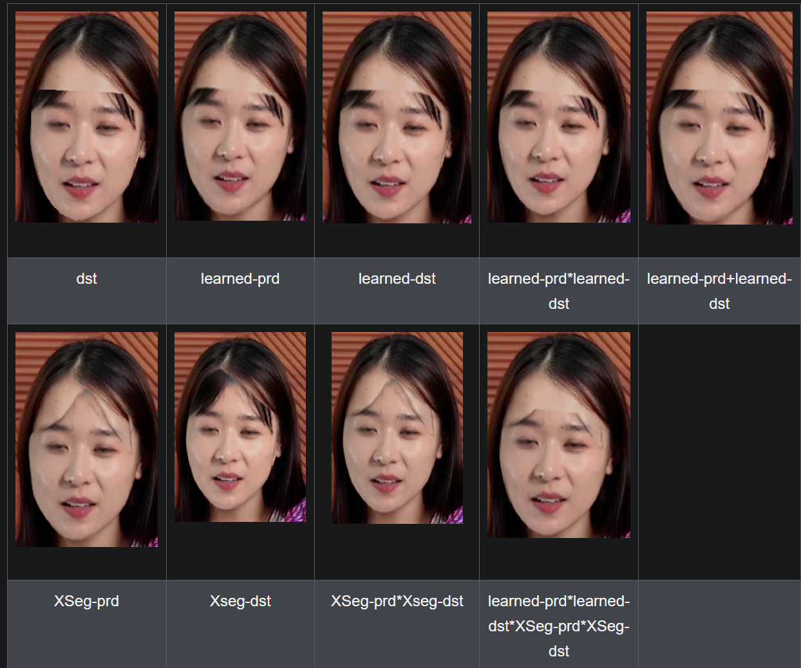
肤色和脸型问题
典型反例：
在训练前开启rct变色，然后在融合时调参解决肤色和脸型问题
解决肤色：
参考：
摘要：
调参示范（效果最好）（训练10万次）
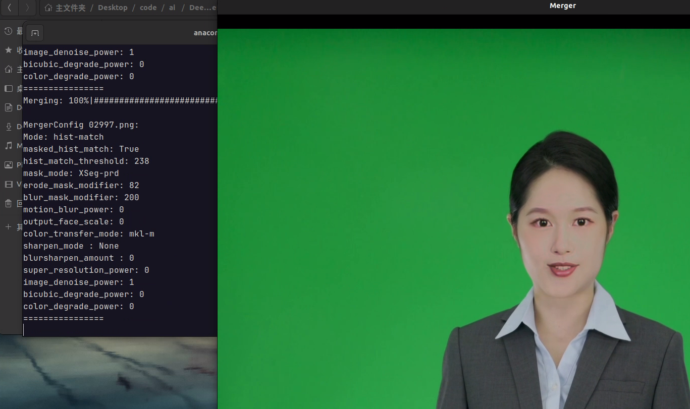
调参思路：
解决脸型不一样导致的黑边： 增大image_denoise_power
解决脸型不一样导致的光影差别：同时增大erode_mask_modifier和blur_mask_modifier
按C切换合适的颜色模式
按X尝试不同的遮罩
导出结果为mp4
./8_merged_to_mp4.sh
如果您的ffmpeg不支持libx264，可考虑在John Van Sickle - FFmpeg Static Builds下载ffmpeg，并将其添加到PATH
demo
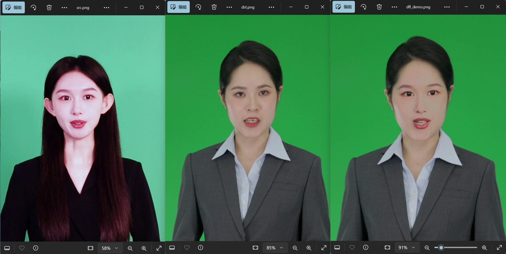
训练10万次的效果：
对比：deeplivecam的效果
deeplivecam的脸更模糊，边缘处理不是很好
DeepFaceLab论文粗读
https://arxiv.org/abs/2005.05535
本项目简称DFL
src为源脸，dst为目标脸，需要将src的脸换到dst上
流程
3.1Extraction
-
从src和dst中提取人脸，默认使用S3FD(https://arxiv.org/abs/1708.05237)作为人脸检测器。另外RetinaFace也可以用于检测人脸
-
面部对齐：facial landmarks很重要
-
2DFANhttps://arxiv.org/abs/1703.07332 适合标准正脸
-
PRNethttps://arxiv.org/abs/1803.07835 处理侧脸
在检索到面部特征点后，还提供了一个可配置时间步长的可选函数，以平滑单个镜头中连续帧的面部特征点，以确保进一步的稳定性。
使用这篇论文https://web.stanford.edu/class/cs273/refs/umeyama.pdf 的方法计算相似变换矩阵
DFL提供了上面论文所需的标准对齐的人脸关键点模板。值得注意的是，DFL可以利用获得的面部特征点自动预测欧拉角（处理侧脸）。
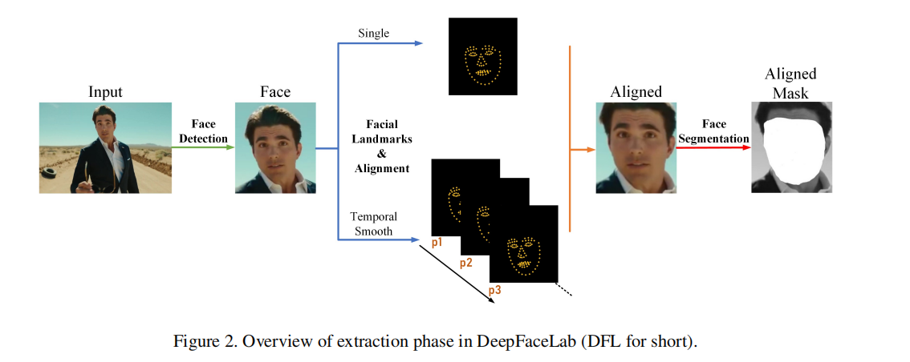
使用fine-grained Face Segmentation network 基于论文TernausNet: U-Net with VGG11 Encoder Pre-Trained on ImageNet for Image Segmentation，这样头发、手指、眼镜等都可以分割。去除不规则遮挡是可选的，但很有用，可以保持网络在训练过程中对手、眼镜和任何其他可能以某种方式遮住脸部的物体具有鲁棒性。
然而，由于一些最先进的人脸分割模型在某些特定的镜头中未能生成细粒度的掩模，因此在DFL中引入了XSeg。XSeg允许每个人通过少样本学习范式(图8是XSeg的示意图)来训练他们的模型，以分割特定的人脸集(对齐的src或对齐的dst)。
DFL在训练阶段需要的一切都已经准备好了:原始图像中的对应坐标裁剪的人脸、面部标记、对齐的人脸，以及src的逐像素分割掩码(由于dst的提取过程与src相同，因此无需详细阐述)。
3.2 training
我们提出DF和LIAE两种训练架构
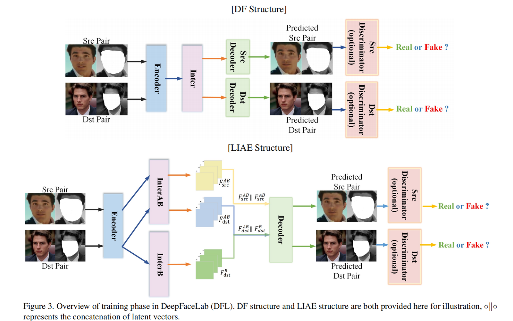
效果：LIAE>DF
Quick用的就是DF架构
3.3 conversion
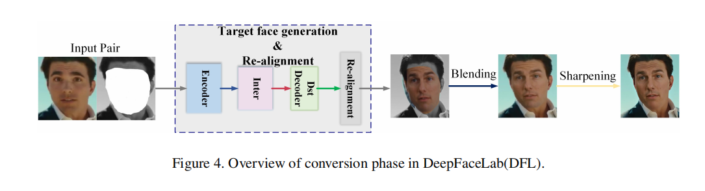
Deep-Live-Cam
https://github.com/hacksider/Deep-Live-Cam
这个仓库是https://github.com/s0md3v/roop 的分支，因为旧的仓库停止维护了，这个仓库做了一些完善
仓库只包含了运行所需的代码和预训练的模型，没有找到训练代码
库和模型由 insightface 仓库提供
用docker完成一次推导
1
2
3
4
5
6
7
8
9
10
| sudo docker run --gpus all \
-v ./data/change-face:/app/data \
-v ./.insightface:/root/.insightface/models \
-e HTTP_PROXY="http://192.168.134.196:7890" \
-e HTTPS_PROXY="http://192.168.134.196:7890" \
pepitedata/deep-live-cam \
-s /app/data/1.png \
-t /app/data/1.mp4 \
-o /app/data/1_dlc.mp4 \
--keep-fps --keep-audio
|
批量推导：详见/home/node1/Desktop/code/ai/Deep-Live-Cam/work/run.py
1
2
3
4
5
6
7
8
9
10
11
12
13
14
15
16
17
18
19
20
21
22
23
24
25
26
27
28
29
30
31
32
33
34
35
36
37
38
39
40
41
42
43
44
45
46
47
48
49
50
51
52
53
54
55
56
57
58
59
60
61
62
63
64
65
66
67
68
69
70
71
72
73
74
75
76
77
78
79
80
81
82
83
84
| import os
import argparse
args = argparse.ArgumentParser()
args.add_argument(
"--img_path",
type=str,
default="/home/node1/Desktop/code/ai/data/swap-face/random-face-jpg",
)
args.add_argument(
"--video_path",
type=str,
default="/home/node1/Desktop/code/ai/DeepFaceLive/build/linux/data/video_240823",
)
args.add_argument(
"--output_path",
type=str,
default="/home/node1/Desktop/code/ai/Deep-Live-Cam/work/output",
)
args = args.parse_args()
template = f"""sudo docker run --gpus all \
-v /home/node1/Desktop/code/ai/Deep-Live-Cam/data/change-face:/app/data \
-v /home/node1/Desktop/code/ai/Deep-Live-Cam/.insightface:/root/.insightface/models \
-v {args.img_path}:/app/random_face \
-v {args.video_path}:/app/video_240823 \
-v {args.output_path}:/app/myoutput \
-e HTTP_PROXY="http://192.168.134.197:7890" \
-e HTTPS_PROXY="http://192.168.134.197:7890" \
--name deep-live-cam \
pepitedata/deep-live-cam \
-s /app/random_face/!1 \
-t /app/video_240823/!2 \
-o /app/myoutput/!3 \
--keep-fps --keep-audio
"""
import time
import numpy as np
class Timer:
"""记录多次运行时间"""
def __init__(self):
self.times = []
self.start()
def start(self):
"""启动计时器"""
self.tik = time.time()
def stop(self):
"""停止计时器并将时间记录在列表中"""
self.times.append(time.time() - self.tik)
return self.times[-1]
def avg(self):
"""返回平均时间"""
return sum(self.times) / len(self.times)
def sum(self):
"""返回时间总和"""
return sum(self.times)
def cumsum(self):
"""返回累计时间"""
return np.array(self.times).cumsum().tolist()
timer = Timer()
for img in os.listdir(args.img_path):
for video in os.listdir(args.video_path):
output_name = f"{img[:-4]}_{video[:-4]}.mp4"
if output_name in os.listdir(args.output_path):
print(f"{output_name} already exists")
continue
print(f"\x1b[32mstart processing img {img} and video {video}\x1b[0m")
cmd = template.replace("!1", img).replace("!2", video).replace("!3", output_name)
timer.start()
os.system(cmd)
os.system("sudo docker remove deep-live-cam")
if timer.stop() < 5:
print(f"\x1b[31m{output_name} failed\x1b[0m")
break
|
效果
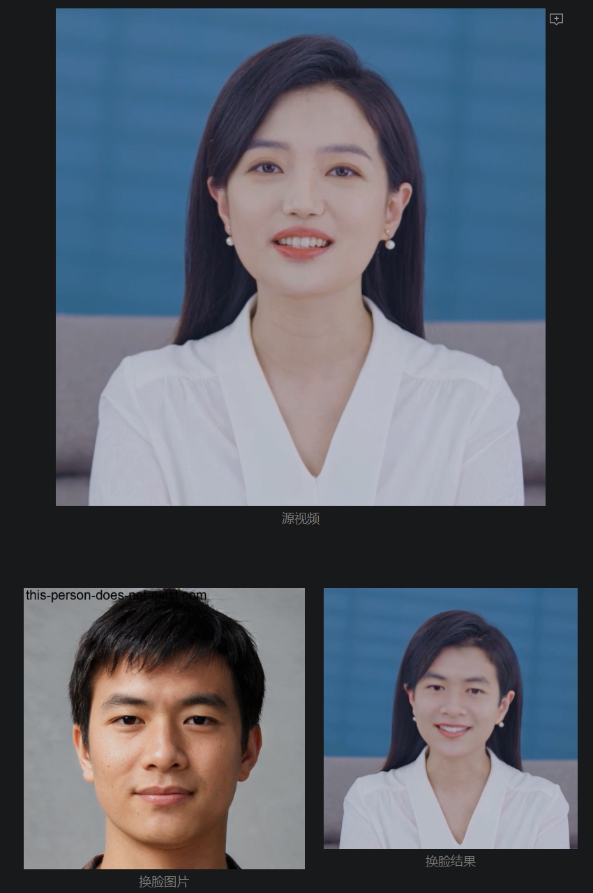
问题：面部清晰度明显比周围低，尽管原视频和换脸图片的分辨率都足够高
docker部署(带直播功能)
直播功能需要使用摄像头和图形界面，docker部署需要挂载摄像头并实现X11转发
1
2
3
4
5
6
7
8
9
10
11
12
| sudo docker run --gpus all \
-e HTTP_PROXY="http://192.168.134.197:7890" \
-e HTTPS_PROXY="http://192.168.134.197:7890" \
-v ./data/change-face:/app/data \
-v ./.insightface:/root/.insightface/models \
--device=/dev/video0:/dev/video0 \
--device=/dev/video1:/dev/video1 \
--env="DISPLAY" \
--volume="/tmp/.X11-unix:/tmp/.X11-unix:rw" \
--name deep-live-cam \
pepitedata/deep-live-cam \
--execution-provider cuda
|
效果
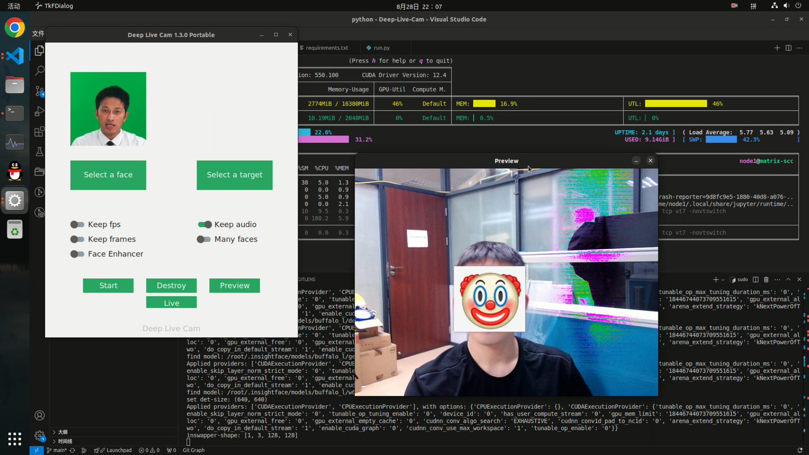
facefusion
GitHub - facefusion/facefusion: Next generation face swapper and enhancer
https://docs.facefusion.io/
安装：
跟随官网教程，然后 pip install -r requirements.txt
python run.py
只推理了一张图，面部太糊，遂放弃该仓库
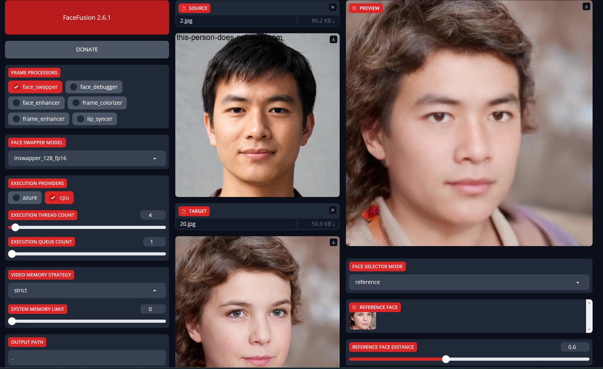
FaceDancer
2022/10
在线测试https://huggingface.co/spaces/felixrosberg/face-swap
论文 https://arxiv.org/abs/2210.10473
github GitHub - felixrosberg/FaceDancer
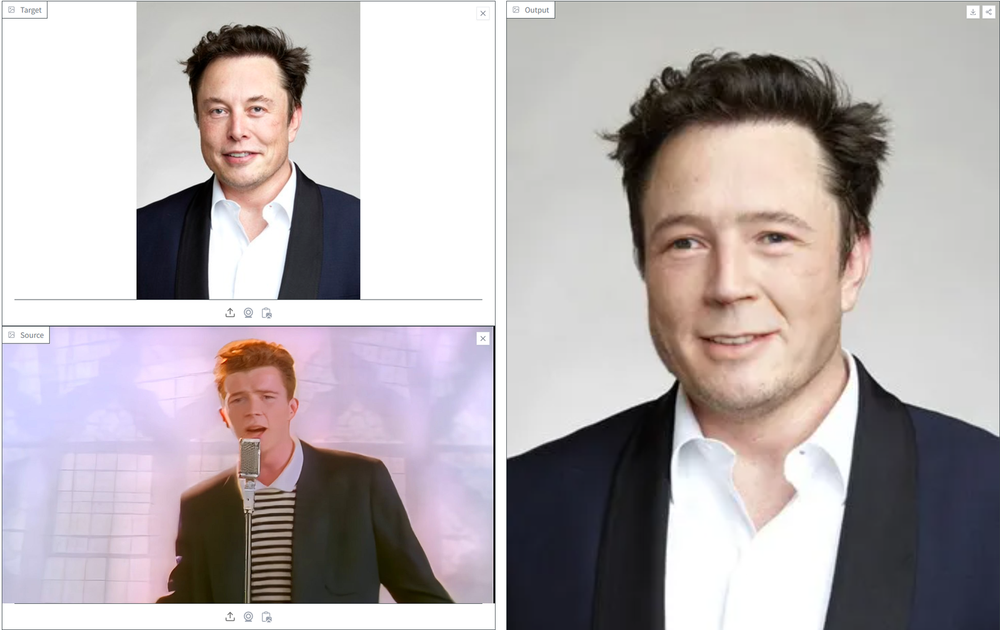
insightface
https://github.com/deepinsight/insightface/
这本来是一个人脸识别仓库，但是借助人脸识别的技术可以实现换脸
仓库没有开源换脸的细节，而是提供了商用换脸服务 picsi: https://www.picsi.ai/ ，在picsi 的网站上没有找到相关技术细节
仓库下方提供了一系列论文，但是都和人脸识别有关，没有找到换脸相关的论文
腾讯云-人脸融合
不开源，可作为换脸任务标杆
人脸融合_AI换脸_AI变脸 - 腾讯云
融合并非单纯的换脸，最终合成图经过人脸识别提取的信息和选脸图经过人脸识别提取的信息是相同的
优势：稳定性好，肉眼看不出区别
同样的输入换三次：
下图为 上图图1和图2用python做差得到的效果
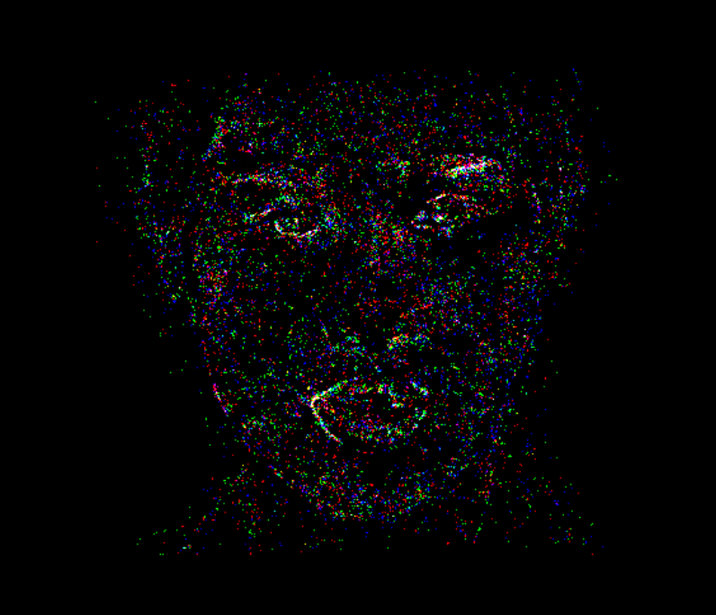
人脸数据生成
随机人脸生成
公开人脸数据集
https://blog.csdn.net/YMilton/article/details/120503287
Face Adapter
浙大，腾讯
https://arxiv.org/abs/2405.12970
代码GitHub - FaceAdapter/Face-Adapter
和相关工作相比，FADM能够提升图片质量，但仍然无法解决由于姿态变化过大导致的模糊问题，DiffSwap因为在训练时缺少背景信息而导致面部模糊。这俩方法都没有充分发掘预训练的大型diffusion model的潜力
如果直接用遮罩覆盖面部区域，没有考虑到脸型的变化，会降低身份的保真度
运行代码
选用不同的diffusion模型能得到不同的风格
模型1
1
| python infer.py --base_model "frankjoshua/toonyou_beta6"
|
得到output1
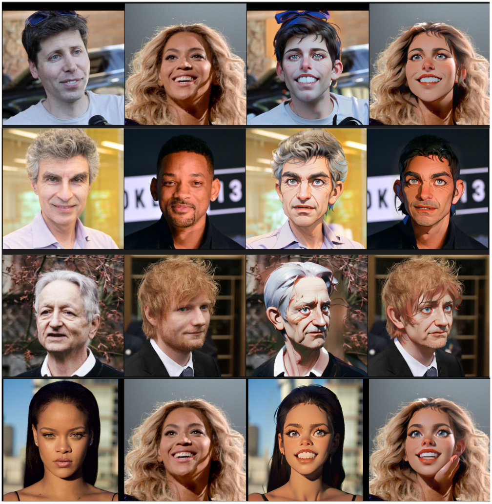
右下角的图，凭空出现了一只手
模型2
该模型的效果更加贴近现实，但是在纹理上和真实有些区别（更加平滑），容易被认出为AI生成
1
| python infer.py --base_model "benjamin-paine/stable-diffusion-v1-5"
|
得到output2
默认迭代25轮，平均每秒迭代10轮(4060Ti)
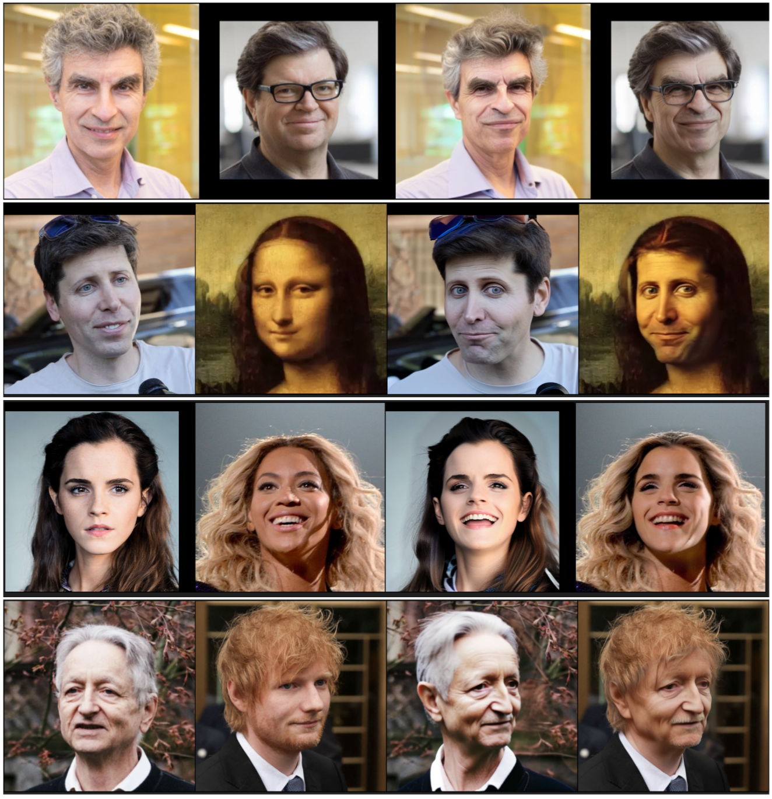
这个模型对耳部的处理有欠缺
做成视频的效果：抖动严重（画质原本很好，这里画质差是视频压缩导致的)